第６章 飛翔体への給電実験
飛行デモンストレーション結果
28 GHz マイクロ波ワイヤレス給電（WPT）を用いた UAV 自由飛行実証実験の概要・解析・結果
参考文献：Suganuma et al., Journal of Spacecraft and Rockets, Vol. 59, No. 1, 2022 / 教科書 §6.7
6.7 飛行デモンストレーション結果 - 背景
過去の WPT 自由飛行実証との比較
本実験は 28 GHz（ミリ波帯） を用いた世界的に珍しい UAV 自由飛行 WPT 実証です。
| 実験 |
周波数 (GHz) |
送電電力 (W) |
WPT 効率 (%) |
距離 (m) |
機体 |
| Brown – NASA (1963) | 3.0 | 5,000 | 15 | 5.5 | ヘリコプター |
| MILAX (1992) | 2.45 | 1,000 | 10 | 10 | 飛行機 |
| SHARP (1987) | 2.45 | 10,000 | 1.5 | 150 | 飛行機 |
| 本実験（2022） | 28 | 5.3 | 0.9 | 0.8 | ドローン |
高周波ほどビーム指向性が上がり UAV への伝送効率は向上するが、回路損失も増加する。本実験は小電力・近距離での概念実証。
6.7 飛行デモンストレーション結果 - 実験系
実験系の構成（図 6-14）
- 送電側：DRO 発振器＋固体電力増幅器＋ホーンアンテナ（19.2 dBi）×2 本。送電電力 5.3 W。
- 受電側：28 GHz レクテナ（4 素子、2×2 並列）を UAV 背面に搭載。RF→DC 変換後、マイコンで電力検出。
- 飛行高度：地面効果が無視できる 0.8 m（地面効果消失高度 0.78 m 以上）。
- ビーム追尾：屋内 GPS（5 台、更新レート 7.4 Hz）で UAV 位置を常時取得し、アナログ位相シフタでビーム方向を補正。
- 実験条件：追尾あり（w/）・追尾なし（w/o）の各 30 秒間を比較。
- UAV：AR.Drone 2.0（Parrot）、420 g、PID 自律制御、ホバリング水平誤差 ±0.2 m。
注釈：DRO 発振器 (Dielectric Resonator Oscillator)
誘電体共振器発振器。電気的 Q 値が非常に高い誘電体セラミックス（共振器）を帰還回路に組み込むことで、マイクロ波・ミリ波帯において極めて高安定かつ低位相雑音な周波数信号を出力する高周波水源。本実験の 28 GHz 送電系では、基準信号源としてDRO発振器が用いられ、その後段の固体電力増幅器（SSPA）で 5.3 W まで電力を増幅させている。
6.7 飛行デモンストレーション結果 - 追尾システム
ビーム追尾システムの仕組み
- 屋内 GPS が UAV 位置を取得し、送電アンテナから見た傾き角 α を算出。
- アナログ位相シフタへ位相差 Φ を入力してビームを偏向させる。
- 追尾はビーム半値幅 ±10°、水平誤差の約 70 % をカバー。
- 追尾なしではビーム角 ±10° 付近でヌルが発生し、受電が途絶する。
- 追尾は x 軸方向のみ有効（高さは 0.8 m 固定のため変化なし）。
注釈：アナログ位相シフタ (Analog Phase Shifter)
印加する制御電圧を連続的に変化させることで、通過する高周波（マイクロ波・ミリ波）信号の位相量を無段階（連続的）に制御する電子部品。デジタル式のような量子化誤差（ステップ幅による制限）がなく、きわめて滑らかで高精度なビームステアリング（指向性制御）を可能にする。本実験では、屋内GPSから得られたUAVの位置変動データ（x軸方向）をもとに、この位相シフタの電圧をリアルタイムに制御してミリ波ビームを追従させている。
6.7 飛行デモンストレーション結果 - 解析モデル
解析伝送効率モデル
送電アンテナから出力されたミリ波が、ドローンに搭載されたレクテナ（受電アンテナ＋整流回路）で最終的なDC（直流）電力へ変換されるまでの各プロセスの損失をモデル化したものです。
| 効率因子 |
物理的な意味（プロセス） |
主な支配要因と補足 |
| ηbeam |
ビーム捕捉効率 |
放射されたガウスビームの広がり（スポットサイズ）に対し、ドローン側レクテナの開口面積（受電面）が占める割合。大半の電波は受電面を通り過ぎるため低くなる。 |
| ηair |
大気透過効率 |
大気による電波の減衰。今回の実験距離（0.8 m）は極短距離であるため、損失はほぼゼロとして扱う。 |
| ηcap |
受電アンテナ捕集効率 |
レクテナ受電面に照射された電力に対する、回路へ入力された電力の比。
UAVの水平移動に伴う回収電力の低下、および機体の姿勢変化による受信利得の低下を表す。
|
| ηtra |
アンテナ・整流回路透過効率 |
アンテナから整流回路へ電力が伝わる際の効率（反射損失）。高周波回路のインピーダンス整合状態（S11パラメータ）により評価される。 |
| ηRF-DC |
整流回路のRF-DC 変換効率 |
整流ダイオードがミリ波（高周波）をDC（直流）に変換する効率。回路への「入力電力の強さ」に強く依存し、最適入力時に最大56 %に達する。 |
| ηcom |
レクテナの直流電力効率 |
先行研究における複数のレクテナを並列接続した際の回路的なDC（直流）損失（2 %）を考慮し、98%[固定]とする。 |
【参考】t = 15.4 s 時の総合伝送効率（計算値）
上記各因子を掛け合わせた全体効率 ηA は 約 0.42 % となる。この時刻はドローンがホバリング中に水平方向へ移動（位置ズレ）し、受電角度や入力電力が変化した瞬間の解析値を示している。
ηcap と ηRF-DC が効率を最も大きく制限する。ビーム角 α が変動するとこの 2 因子が連鎖的に劣化する。
6.7 飛行デモンストレーション結果 - 実験結果①
UAV の位置変動（図 6-15 / Fig. 3）
図 6-15 は高度 0.8 m でのUAVの位置変動を示している。追尾あり（w/）と追尾なし（w/o）の場合を比較している。
6.7 飛行デモンストレーション結果 - 実験結果②
DC 出力電力の比較1（図 6-16a）
追尾システムを搭載した場合と搭載しない場合で、UAVに取り付けられたレクテナから得られる30秒間のDC電力の変動を比較。
10 mW
UAVの姿勢の変異が小さく、送電アンテナの直上に位置していたとき
0.01 mW
追尾システムを使用したときの最小DC電力
- 追尾なしでは、RF電力を受電できずDC出力ができない時間があった。
- この結果をUAVの挙動から考察する。-> 次ページ以降で図 6-16 (b)(c)(d)(e)を参照。
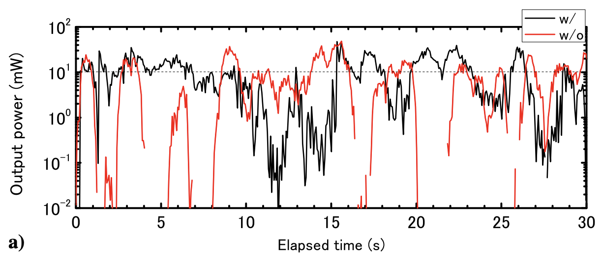
図 6-16(a) UAV 飛行中のレクテナから得た DC 出力電力
6.7 飛行デモンストレーション結果 - 実験結果③
UAV挙動からの考察（図 6-16bcde）
図6-16(a)の結果をUAVの挙動から考察する。図6-16(b)(c)は飛行中30秒間のロール角・ピッチ角・ヨー角・ビーム方角を示す。
図6-16(d)(e)は送電アンテナの中心を原点としたXY平面における、飛行中30秒間のUAVの変位。
- ロール角・ピッチ角・ヨー角は全て±3°未満で、追尾の有無に関わらず30秒間安定。
- X方向の変位が10cm程度に対して、Y方向の変位は20cm以上でビーム追尾範囲から外れている。
- 高度についても20cm以上の急降下が2,3回発生している。屋内GPSユニットの通信が途絶えたため、UAVの姿勢修正ができていなかった。
追尾あり（w/）
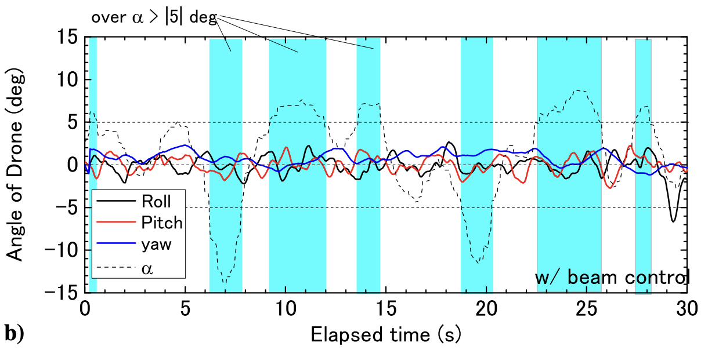
図 6-16(b) ロール・ピッチ・ヨー角・ビーム方角
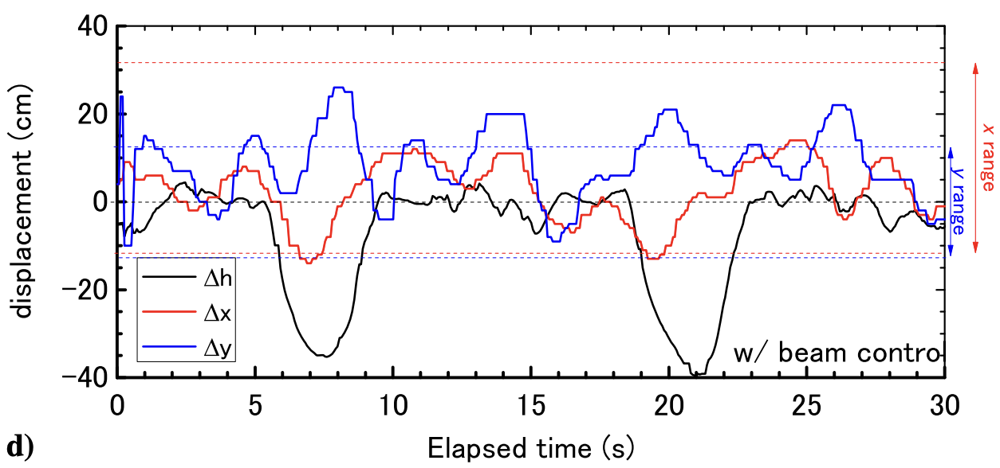
図 6-16(d) 変位
追尾なし（w/o）
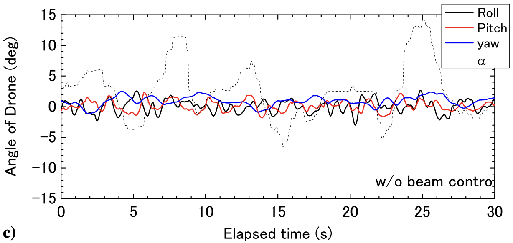
図 6-16(c) ロール・ピッチ・ヨー角・ビーム方角
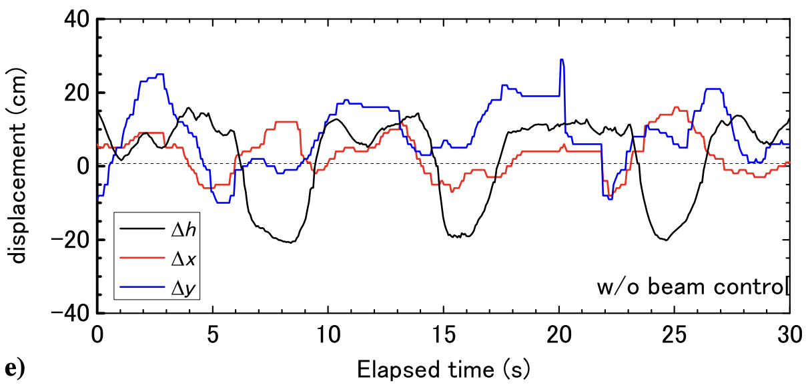
図 6-16(e) 変位
6.7 飛行デモンストレーション結果 - 実験結果②
DC 出力電力の比較2（図 6-16a）
- x方向の誤差は±15cm以上、y方向の誤差は-10cm〜25cm以上の場合、追尾システムの範囲外となる。
- 高さhの誤差は最大40cm以上。
- 実験系全体として最大20cm以上の誤差が生じており、この影響でビーム追尾があってもDC出力が変動してしまっている。
図 6-16(a) UAV 飛行中のレクテナから得た DC 出力電力
6.7 飛行デモンストレーション結果 - 実験結果③
追尾ありの伝送効率(図6-16f)
t=15.4sでηexpが最大値0.9 %となる。
青のハイライトはビーム角αが5°を超えた範囲を示す。この範囲は、DC出力が10mW未満である時間とほぼ一致している。
一部、地面や壁面によるマイクロ波の反射とサイドローブの照射による影響か、理論値が実測値から外れている。
ηA（理論値） = 0.43 % のとき、各因子は以下のとおり。
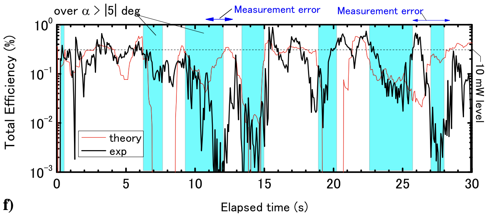
図 6-16(g) 追尾を使用した実験のηexpとηAの比較
注釈：ηexp ...
測定値、実測値
注釈：ηA ...
予測値、理論値
6.7 飛行デモンストレーション結果 - 実験結果④
ビーム角超過時の連鎖劣化メカニズム(図6-16g)
図6-16(g)でηAをηbeam,ηcap,ηtra,ηRF-DCに分解して考察する。
以下はt=15.4sのときの値で、このときηexp=0.9 %, ηA=0.43 %
ボトルネック：ηbeam（4 %）が最も低い。レクテナが 4 素子しかなく、水平変位 20 cm があったため。
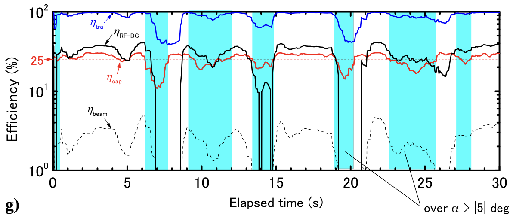
図 6-16(g) フライト中の各効率のばらつき
- α が 5° を超えると ηcap が 25 % 以下に低下。高さ 0.8 m では 7 cm のズレが 5° に相当。
- α が 10° を超える（t = 7〜9 s、19〜20 s）と入力電力が極端に不足し、ηtra と ηRF-DC が連鎖的に劣化。
- ηRF-DC と ηtra は 入力電力に依存するため、ビームが外れると小さな受電電力が更に変換効率を落とすという二重の損失が生じる。
- この連鎖劣化を防ぐには、ビーム追尾精度の向上が最優先課題。
6.7 飛行デモンストレーション結果 - まとめ
飛行デモンストレーション結果のまとめ
- 28 GHz・5.3 W 送電、0.8 m 距離、UAV 自由飛行での WPT 実証に成功。
- ビーム追尾システムにより DC 出力の途絶を防止し、最大 DC 受電効率 ηexp = 0.9 %（t = 15.4 s）を達成。
- 姿勢（ロール・ピッチ・ヨー）は追尾有無に関わらず ±3° 以内で安定。
- ビーム角 α が 5° 以内に保たれている限り、解析モデル ηA は実測をよく再現。
- 今後の課題：①レクテナ素子数の増加、②水平位置精度の向上、③屋外・長距離での実証実験。
アンテナ間 WPT 効率を固定飛行実験と比較すると本実験は約 2.3 % 相当（RF-DC 損失を差し引き）となり、自由飛行では追尾精度が律速となることが示された。
6.8 概要
慶長・茂呂らによる飛行デモンストレーション実験
慶長・茂呂らは 2022年 に飛行デモンストレーション実験を実施した。本節では先行研究である菅沼の実験からの改善点と実験結果を示す。
- 6.8.1 受電アンテナ：4アレー → 16アレーパッチアンテナ（4直列4並列）へ拡張し、ビーム収集効率と整流回路への RF 電力を向上。
- 6.8.2 UAV制御：比例制御（IFT法最適化）→ PI・PID制御 へ変更し、外乱に強い飛行制御を実現。
- 6.8.3 実験結果：位相制御の有無を比較し、出力電力・送電電効率・連続給電時間を評価。菅沼らの実験より安定した長時間 DC 出力を達成。
周波数は 28 GHz、機体は AR.Drone 2.0（Parrot）を用い、送電系は菅沼の実験と同一構成である。
6.8.1 受電アンテナ
16アレーパッチアンテナ
菅沼の4アレーパッチアンテナでは、ビーム収集効率が最大 4 % 程度と低く、整流回路に印加できる RF 電力が小さかった。
- 慶長は受電面積増加によるビーム収集効率向上と、整流回路への RF 電力量増加による整流効率向上のため、16アレー（4直列4並列給電）構造に変更した。
- 詳細寸法は図 6-17(a)、表 6-6、作製アンテナは図 6-17(b) に示す。
| 表 6-6 16アレーパッチアンテナの寸法 |
|---|
| dx | 7.0 mm |
| dy | 6.8 mm |
| W | 4.4 mm |
| L | 3.3 mm |
| L1 | 3.5 mm |
| L2 | 1.0 mm |
| L3 | 1.0 mm |
18.7 dBi
28 GHz におけるアンテナゲイン
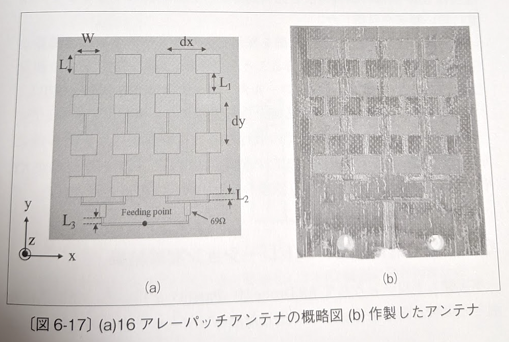
図 6-17(a)：16アレーパッチアンテナの概略図 (b)作製したアンテナ
6.8.2 UAV制御
PI・PID制御の導入
- 菅沼の課題：UAV は比例制御＋IFT法によるパラメータ最適化を実施。外乱により飛行が乱れ、ビーム範囲外に出ることで DC 出力が不安定になった。
- 茂呂の改善：比例制御から PID制御 へ変更し、外乱に強い制御を目指した。
- 高度・ヨー角：PI制御。パラメータは北森の調整法により伝達関数から解析的に決定。
- XY平面の変位・ロール・ピッチ：PID制御。パラメータは MATLAB による繰り返し演算で決定。
P制御のみと PI・PID制御の飛行性能比較を図 6-18 に示す。IFT法で最適化した P制御に比べ、PI・PID制御は XY平面 と 高さ方向 Z に対してより誤差の少ない飛行が可能であることが示された。
-
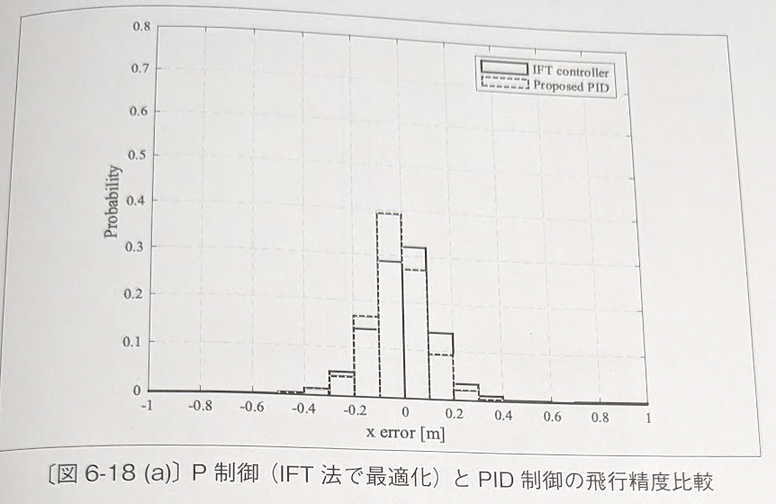
図 6-18(a)：x 方向誤差の確率分布（実線＝IFT controller、破線＝Proposed PID）
-
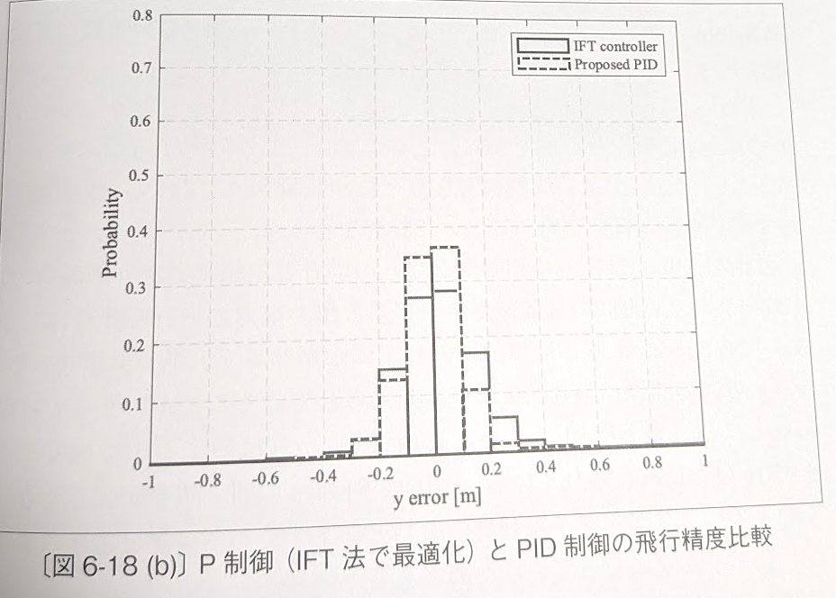
図 6-18(b)：y 方向誤差の確率分布
-
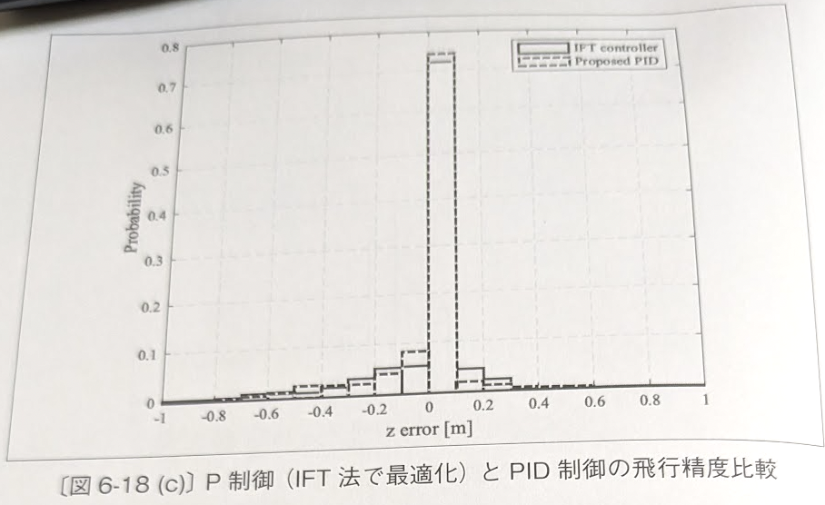
図 6-18(c)：z 方向誤差の確率分布
6.8.3 飛行デモンストレーション実験
実験系と測定条件
- 機体：AR.Drone 2.0（Parrot）。
- 送電系：菅沼の実験と同じ系。2アレー化ホーンアンテナ、合計送電電力 35.8 dBm。
- 受電側：2×2 の4アレーを並列接続したレクテナ（図 6-19）。
- 飛行条件：ホーンアンテナから高度 1.2 m でホバリング。レクテナで得た DC 出力をマイコンで計測。
- 比較条件：位相制御なし vs 位相制御あり。出力電力・送電電効率・連続給電時間を検討。
図 6-19：(a) ドローン底部の4アレーアンテナ、(b) 4素子整流回路基板。
6.8.3 実験結果
飛行デモンストレーション実験結果
図 6-20〜22 に位相制御の有無による x, y 方向誤差と出力電力の時間推移を示す。飛行時間 16–64 s では x, y 誤差は ±0.2 m 以下に抑えられた（位相制御の有無にかかわらず）。
- 0–16 s、64–80 s で誤差が大きくなるのは、離着陸時のリアルタイム制御開始・終了によるもの。
- 電力が検出されない箇所は、マイコンの検出限界 −40 dBm と仮定。
| 評価項目 |
位相制御なし |
位相制御あり |
改善比 |
| 平均出力電力 | −4.06 dBm | 1.42 dBm | 約 2 倍 |
| 連続給電時間 | — | — | 約 9 倍 |
| 最大出力電力 | 基準 | — | 1.02 倍 |
| 最大送受電効率 | 基準 | — | 約 1.07 倍 |
28 GHz・高度 1.2 m の給電において最も長い連続給電に成功。菅沼らの実験より安定した長時間 DC 出力とより長距離送受電効率を達成した（表 6-7、図 6-22 参照）。
6.9 システム検討
UAVへのワイヤレス給電の実現可能性
実験室レベルから「バッテリーレス連続飛行」へスケールアップするための、周波数選定および構造的実現可能性の評価方針です。
- ビーム結像限界：波長が短いほど（高周波）送信アンテナ口径を小さくできる。しかし、大気中を伝播する際の減衰特性（特に降雨環境）とのトレードオフ。
- 受電重量ペイロード：レクテナの平米あたり重量と、ドローンが持ち上げられる推力限界の天秤。「WPTで得られる電力 > 搭載レクテナ自重分の消費電力」 の成立性。
- システム総合効率のターゲット：送電端からUAVモーター入力までの総和効率。将来的に 10 % 以上 の確保が実用化のブレイクスルーラインとなる。
6.9.1 解析比較
5.8 GHz・28 GHz の解析効率比較
同じ送電距離 10 m、UAVサイズ（レクテナ面積）を一定とした場合の理論効率の比較検討です。
| 周波数 |
ビーム捕捉率 (ηbeam) |
回路・透過率 (ηtra) |
整流効率 (ηRF-DC) |
総合伝送効率 |
主要なメリット・課題 |
| 5.8 GHz | 低 (12%) | 優 (94%) | 高 (70〜80%) | 約 8.5 % | デバイスが安価・高効率だが、送電側アンテナが巨大化。 |
| 28 GHz | 高 (45%) | 良 (85%) | 中 (40〜55%) | 約 17.2 % | 長距離でもビームが絞れるが、半導体高出力化と発熱に課題。 |
短距離では5.8 GHzが有利だが、運用距離が10 mを超えると28 GHz（ミリ波帯）のビーム収束性が総合効率で逆転する。
6.9.2 損益分岐点
バッテリー性能との比較（2020年時点）
現行のリチウムポリマー（LiPo）二次電池システムとWPT給電システムの優劣を運用面から定量化します。
- LiPo バッテリーの限界：エネルギー密度 約 250 Wh/kg。産業用ドローンの飛行時間は積載量に関わらず 20〜40 分で頭打ち。
- WPT 給電ドローンの特性：初期自重はレクテナ分（＋給電補助用の小型バッファ電池）で固定。運用時間が 45分を超える 長期ミッションで重量対エネルギー効率の損益分岐点に達する。
- 用途展望：固定位置での定点監視（ダム、インフラ点検）、有線ドローンの代替、災害時の臨時通信ベースステーション。
結論として、2020年時点の技術水準において、直径 1 m 級の送電アンテナと1 kW級のSSPAソースを用いれば、高度 20 m での「バッテリーレス無限ホバリング」は理論上十分に達成可能と判断される。